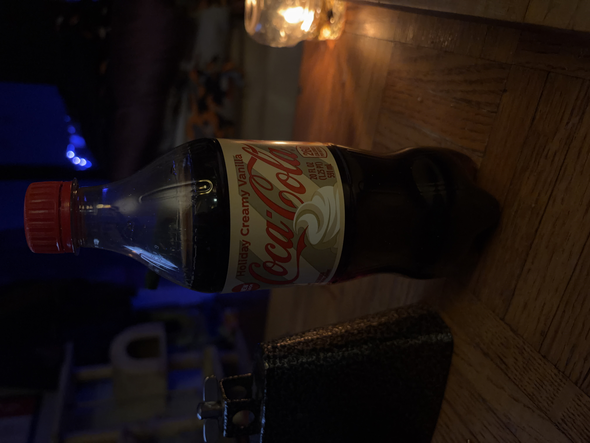
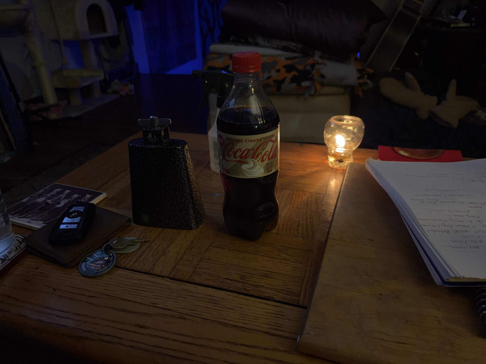

That's right. I tried a limited-edition soda flavor on New Year's Eve. Here's my review from then, which idk why it took me so long to adapt into a blog post.

The bottle once-sipped 🥤
It's a more complicated Coca Cola Vanilla / There's some spice, just a hint of it. "Clove", my friend Pigeon calls it. So that's what is in Spicy Mochas. / And there's like a bit of cream / The vanilla is less strong than it would normally be / This is it room temperature / It sticks to the teeth more than regular Coca Cola / The aftertaste is near identical to regular Coca Cola / Just a bit of that spice / It's warm! The aftertaste is very warm / The attack and the body of the flavor is what's most different / The cream is the least-noticeable flavor / the more I drink it the less vanilla-y it tastes
The final note was at 4:35 AM CST on January 1st of 2026. And 16 days later, uhhhh, I remember vaguely enjoying it? I mean it's pretty similar to non-diet Coca-Cola and, like, non-diet Coca-Cola is a very good soda. I don't think they've fucked it up yet to my knowledge.

The scene around the bottle, with the cowbell we used to celebrate new year's on the left and our new year's resolutions on the right 🔔📃